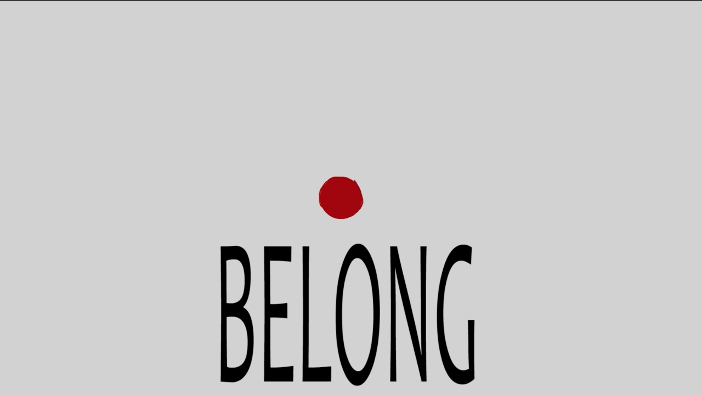
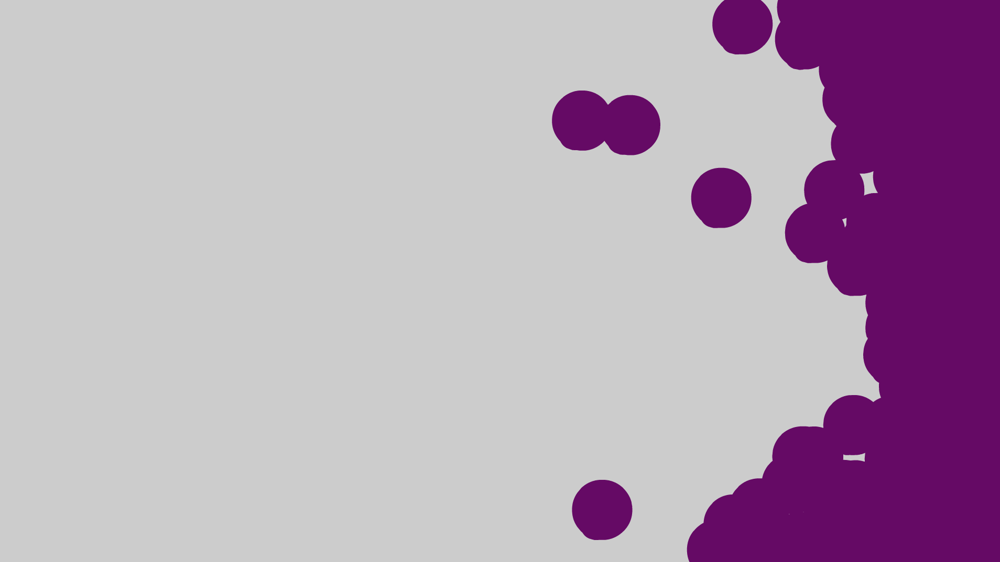
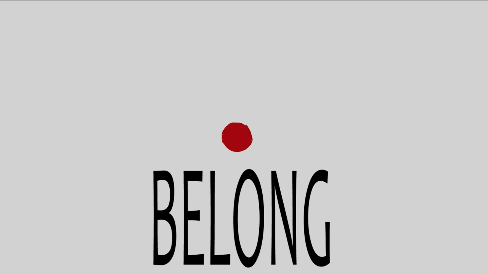
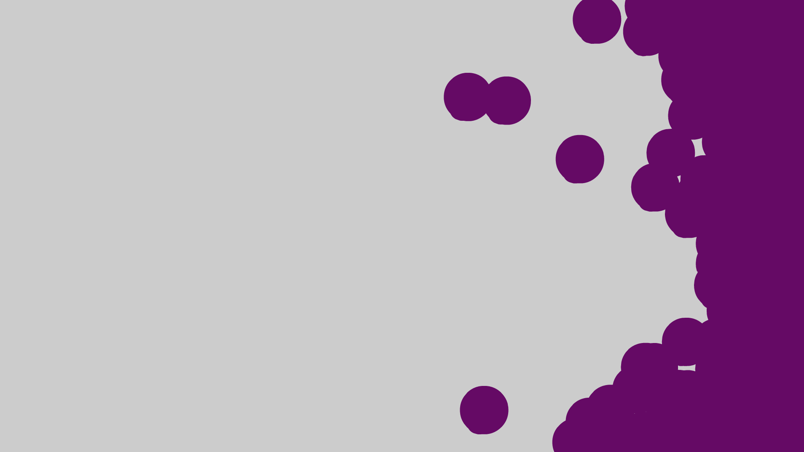

“Belong” is a piece that uses the abstraction of shapes and colors as a metaphor. Though it is an abstraction that is appealing to the eye, there is also a story that may not be so obvious to some. Throughout the story, the main focus is a certain red circle. As this red circle journeys through a purple world, it finds out about some of the unpleasant truths about reality, including that of discrimination and prejudice. The piece uses colors and extravagant shapes and movement as a way to distract the audience, showing how oftentimes, like in our reality, the crimes against humanity often go unnoticed or are not taken seriously.
Each of the over 1000 frames in the animation is hand-drawn by myself in Adobe Animate and edited in Adobe Premiere Pro. The animation was adapted from a storyboard which I also created. The process of this conversion can be seen partly through the trailer, which can be viewed here.
ARTIST BIO
Richard Nubla is a digital artist whose works focus on bring forth problems in society through primarily animation. He works with a majority of the Adobe Creative Suite, such as Animate, Photoshop, Illustrator, After Effects, and Premiere Pro. In addition, he experiments with 3-D software including Autodesk Maya and Blender. Nubla uses his own experiences, as well as those he sees around him, as fuel his work. Currently, he is working on a new 2-D animation covering many of the same topics pertaining to BELONG.
 


